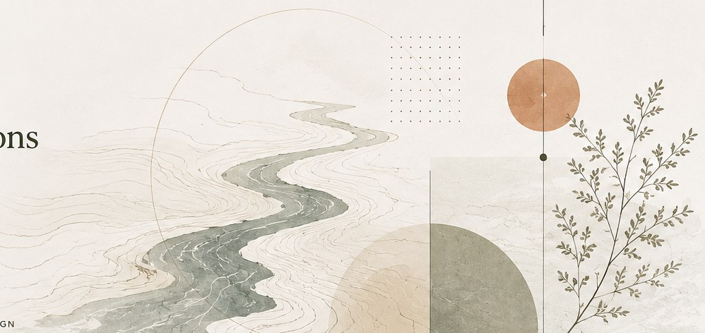

Designing systems that help organizations work smarter.
I'm Avery Moon. I design, document, and improve the systems that help people find what they need, make better decisions, and do complex work more clearly.

Documentation is organizational memory.
Built for clarity and lasting value.
I build structures that make complex work easier to understand, use, and improve—without designing the judgment out of it.
Explore My ApproachSystems Thinking
See relationships, constraints, and the bigger picture behind a problem.
Knowledge Management
Make information findable, usable, transferable, and durable.
Process Design
Turn ambiguity into practical structures that reflect how work actually happens.
Measurable Results
Use evidence to learn, refine, and strengthen what gets built.
Featured Built Systems
Real systems designed to solve real problems.
Alloy Procurement Forecasting System
18 months of forward demand visibility for approximately $3M in production-critical alloy.
↗Equipment Downtime Dashboard
Turning recurring production losses into clearer maintenance priorities.
↗Cross-Training Matrix
Making skills and development gaps visible across roughly 200 employees and 40 roles.
↗